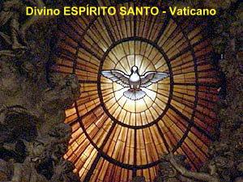

"CATECISMO OFICIAL DA IGREJA"
 A Igreja
Católica através de seu Catecismo
A Igreja
Católica através de seu Catecismo 
Oficial ensina a Doutrina Cristã sobre
o Purgatório.

 §1030 Os que
morrem na graça e na amizade de DEUS, mas não estão completamente purificados,
embora tenham garantida sua salvação eterna, passam, após sua morte, por uma
purificação, a fim de obter a santidade necessária para entrar na alegria do
Céu.
§1030 Os que
morrem na graça e na amizade de DEUS, mas não estão completamente purificados,
embora tenham garantida sua salvação eterna, passam, após sua morte, por uma
purificação, a fim de obter a santidade necessária para entrar na alegria do
Céu.
 §1031 A Igreja denomina
"Purgatório" esta purificação final dos eleitos, que é completamente
distinta do castigo dos condenados. A Igreja formulou a doutrina da fé relativa
ao Purgatório, sobretudo no Concílio de Florença e de Trento. Fazendo referência
a certos textos da Escritura, a tradição da Igreja fala de um fogo purificador:
§1031 A Igreja denomina
"Purgatório" esta purificação final dos eleitos, que é completamente
distinta do castigo dos condenados. A Igreja formulou a doutrina da fé relativa
ao Purgatório, sobretudo no Concílio de Florença e de Trento. Fazendo referência
a certos textos da Escritura, a tradição da Igreja fala de um fogo purificador:
No que concerne a certas faltas leves, deve-se crer que existe antes do juízo um fogo purificador, segundo o que afirma aquele que é a Verdade, dizendo, que, se alguém tiver pronunciado uma blasfêmia contra o ESPÍRITO SANTO, não lhe será perdoada nem no presente século nem no século futuro (Mt 12,32). Desta afirmação podemos deduzir que certas faltas podem ser perdoadas no século presente, ao passo que outras, no século futuro.
 §1032 Este ensinamento se apóia também
na prática da oração pelos defuntos, da qual já a Sagrada Escritura fala:
"Eis por que ele
(Judas Macabeu) mandou oferecer esse
sacrifício expiatório pelos que haviam morrido, a fim de que fossem absolvidos de
seus pecados. (2Mc 12,46). Desde os primeiros tempos
a Igreja honrou a memória dos defuntos e ofereceu sufrágios em seu favor, em
especial o sacrifício eucarístico, a fim de que, purificados, eles possam chegar
à Visão Beatífica de DEUS. A Igreja recomenda também as esmolas,
as indulgências e as obras de penitência em favor dos defuntos:
§1032 Este ensinamento se apóia também
na prática da oração pelos defuntos, da qual já a Sagrada Escritura fala:
"Eis por que ele
(Judas Macabeu) mandou oferecer esse
sacrifício expiatório pelos que haviam morrido, a fim de que fossem absolvidos de
seus pecados. (2Mc 12,46). Desde os primeiros tempos
a Igreja honrou a memória dos defuntos e ofereceu sufrágios em seu favor, em
especial o sacrifício eucarístico, a fim de que, purificados, eles possam chegar
à Visão Beatífica de DEUS. A Igreja recomenda também as esmolas,
as indulgências e as obras de penitência em favor dos defuntos:
Levemos-lhes socorro e celebremos sua memória. Se os filhos de Jó foram purificados pelo sacrifício de seu pai, seria justo duvidar de que nossas oferendas em favor dos mortos lhes levem alguma consolação? Não hesitemos em socorrer os que partiram e em oferecer nossas orações por eles.